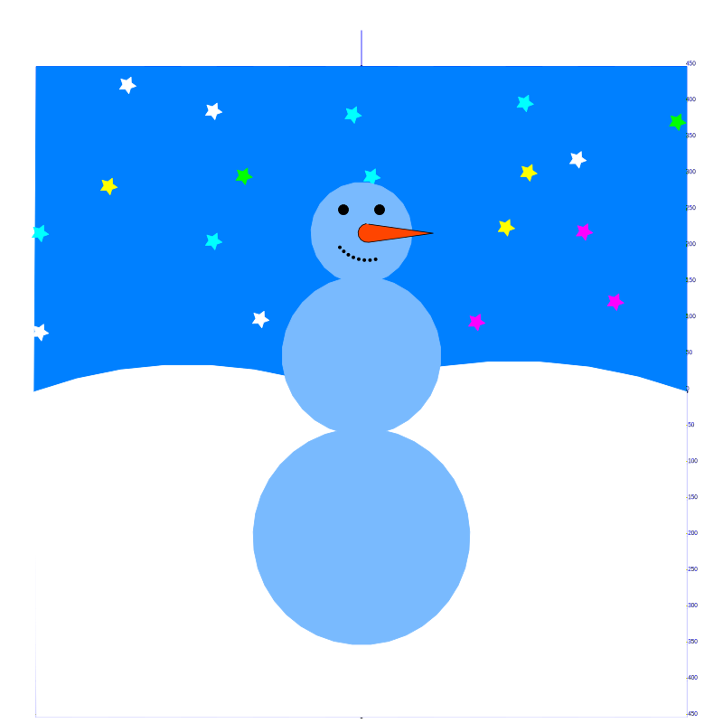

Сегодня мы закончили рисовать голову, и добавили снег и звёздное небо.
Вот результат:

Научились использовать случайные значения из модуля random чтобы нарисовать звёзды на небе.
from random import randint делает функцию randint из модуля
random доступной для использования.randint возвращает случайное число в указанном диапазаноне (например, от -50 до 50).А вот весь исходный код:
from turtle import *
from random import randint
# shape("turtle")
speed(0)
shapesize(2, 2, 1)
# goto(-400, 0)
# goto(400, 0)
# goto(0, 0)
def draw_coordinates():
# рисуем горизонтальную шкалу
width(4)
forward(450)
stamp()
backward(900)
# рисуем вертикальную шкалу
forward(450)
left(90)
forward(450)
stamp()
backward(900)
# горизонатальные линии
color("blue")
width(1)
for i in range(19):
setheading(0)
forward(450)
write(i * 50 - 450)
backward(900)
forward(450)
left(90)
forward(50)
right(90)
# вертикальные линии
right(90)
forward(50)
right(90)
forward(450)
left(90)
for i in range(9):
forward(900)
write(i * 50 * 2 - 450)
left(90)
forward(50)
left(90)
forward(900)
right(90)
forward(50)
right(90)
forward(900)
def draw_sky():
# небо - 1я половина
colormode(255)
color(0, 128, 255)
penup()
goto(450, 0)
pendown()
setheading(160)
begin_fill()
circle(700, 40)
# небо - 2я половина
setheading(160)
circle(620, 40)
goto(-450, 450)
goto(450, 450)
goto(450, 0)
end_fill()
# снег
color("White")
penup()
goto(450, 0)
begin_fill()
pendown()
setheading(160)
circle(700, 40)
setheading(160)
circle(620, 40)
goto(-450, -450)
goto(450, -450)
goto(450, 0)
end_fill()
def draw_snowman():
colormode(255)
# нарисовать круг
setheading(180)
color(121, 186, 254)
penup()
goto(0, -50)
pendown()
begin_fill()
circle(150)
end_fill()
# нарисовать второй круг
goto(0, -60)
setheading(0)
begin_fill()
circle(110)
end_fill()
# третий круг
goto(0, 150)
begin_fill()
circle(70)
end_fill()
# левый глаз
goto(-25, 245)
color("black")
begin_fill()
circle(7)
end_fill()
# правый глаз
penup()
goto(25, 245)
pendown()
begin_fill()
circle(7)
end_fill()
# рот
penup()
goto(-30, 200)
right(50)
for i in range(8):
dot()
circle(50, 9)
# нос
fillcolor("OrangeRed")
goto(10, 232)
begin_fill()
pendown()
setheading(-8)
forward(90)
setheading(-172)
forward(90)
circle(-13, 180)
end_fill()
def stars():
def star(x, y, size, c):
color(c)
penup()
goto(x, y)
pendown()
begin_fill()
for i in range(5):
forward(size)
left(53)
forward(size)
right(125)
end_fill()
star_colors = ("Cyan", "Yellow", "Magenta", "Lime", "White")
for j in range(4):
for i in range(5):
# сделать случайное положение
x = randint(-70, 70) - 380 + i * 190
y = randint(-30, 30) + 400 - j * 100
# сделать случайный цвет
color_number = randint(0, len(star_colors) - 1)
c = star_colors[color_number]
star(x, y, 8, c)
draw_coordinates()
draw_sky()
stars()
draw_snowman()
done()
Отличная работа!